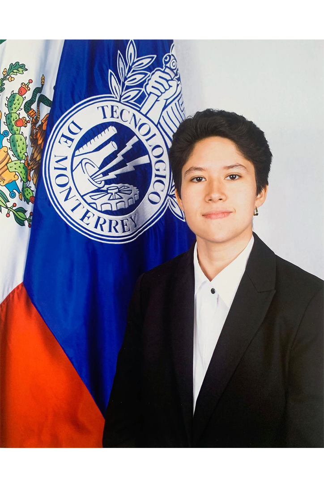

Ana Elena Martínez Rodríguez

About Me
I’m a detail-oriented professional with a deep interest in logistics, expansion, digital marketing, business development, analytics, and data science. I've participated in projects within multiple industries that have allowed me to continue developing skills such as administration, software management, mastering customer relations, enhancing communication practices, and team building.
Work Experience
-
Account Manager, GNP Insurance (April 2024 - Present)
Life, medical, car, home, and pet insurance company.
- I implemented a new Customer Relations Management software, resulting in an increase in customer satisfaction and a 32% reduction in delayed payments.
- I co-ordinated day to day administrative services and scheduling.
- I conducted risk assessment using statistics and regulatory knowledge in order to determine the validity of medical insurance policies.
- I developed an information inflow system that enhanced the efficiency of new contract reviewing by 25%.
- I worked remotely alongside a team while resolving queries in a timely manner.
- I handled communication with customers, staff, managers, and suppliers.
- I managed the company’s mobile phone account and social media.
Education
-
Bachelor in Global Business (August 2020 - June 2024)
Tecnológico de Monterrey
- GPA: 9.6 out of 10
- Held a 50% scholarship for Academic Achievement during my studies.
- Joined “GirlUp”, Model of the United Nations, and Women in Business Associations.
Previous Education
Languages
- English
- Fluent/Native
- TOEFL 110/120
Hobbies
Contact